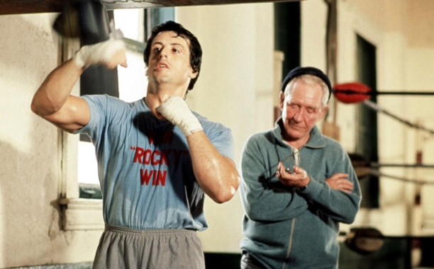

In middle school, I knew what I wanted to do in life. I wanted to be a Software Engineer. It sounded like some sort of cartoon, that there are people making extremely good wages, working in an office that gives you free food, areas to nap, scooters to ride throughout the hallways, it was unbelievable. Well, maybe not all workplaces are like that, however, there seemed to be a lot of great remarks about this career path. Therefore I should put in hard work from then on.
I did not put in the hard work.
I am not a very productive person, nor a very motivated person. Just an average lazy student that just gets by. It would take months to build a strong habit of studying to get me out of this slump. That is not to say that I never study, or I do not know how to code. I study if I feel like it’s necessary. Calculus, Physics, Linear Algebra… I studied my butt off and just got subpar scores or even barely passing. So, maybe I must be doing something wrong?

As someone who works out very often, I learned that you have to do your own experimenting for almost every exercise you do. It is not enough to just read a workout program you found on the internet or from your friend if you are not working out properly and making the most out of the exercises.
Proper form, steady tempo, trying to avoid ten minute long rests between sets. This requires dedication and practice. When I started out, I would consume days worth of fitness content on YouTube, reading essays and studies about the optimal repetition range, and ideal amount of exertion for a compound lift… All of this effort, because I would genuinely be interested in the subject and loved learning more about it.
When it comes to the learning style associated with the Athletic Software Engineering system, consisting of Workouts of the Day and a high-intensity, fast-paced class session, I found it quite thrilling. This style of learning forces me to practice very often and time myself, trying to improve my time through each attempt. Similar to improving your three rep max on squats every week, you have to log what was your attempt and how difficult it was.
I have to say that it is quite thrilling. The loud clacking of keyboards for around fifteen minutes adds to the stress, but figuring out a solution to the weekly Workout of the Day is so satisfying. Creating something on my own using the skills and knowledge that I possess at the time, additionally, the hard work from practicing with peers and the teaching assistant feels like it pays off.
I remember having to code in the terminal for a whole semester. In order to code efficiently, I had to install so many mods for my native terminal to make it look pleasing to the eyes and legible. Nevertheless, C/C++ made me feel like I was quite proficient in the material taught to us. I could read the current week’s presentation slides and get to coding right away. I would give myself a couple of hours before the deadline to finish the program that day. I succeeded all but one week.
One year later and now I am coding Javascript. I remember learning the language in high school, however I do not remember a thing. All I can recall is that it was difficult to understand. However, for some reason… This has been the easiest language I have ever used. So far, the omission of many different data types allowed me to focus mainly on the code itself. I am able to think of a solution involving for loops, if statements, switch cases. Not to mention, JSFiddle allows you to code conveniently in your browser. If you are in a pinch, you could finish your code on your phone or someone else’s computer!
freeCodeCamp was a great resource for me as I could work at my own pace and it was nice and simple that I could just focus on one topic at a time without having to watch a eight hour video just copying the code. Since Javascript has similar rules to other languages such as the use of semicolons, parenthesis and naming conventions, it should be a great first language to learn or even for people who are not primarily Computer Science focused, they should be able to pick up this language and get coding in no time.
Overall, Javascript is a good language to learn and can be very useful in future endeavors for all career paths.